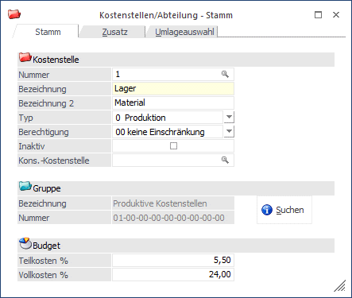
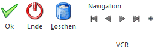
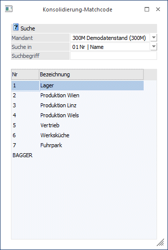
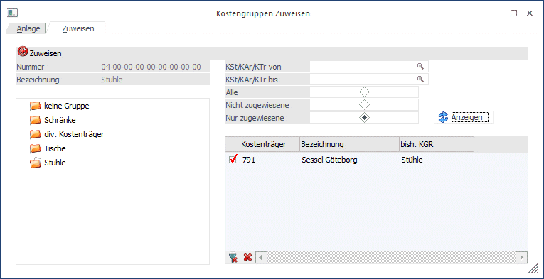

Eine Kostenstelle kann ein funktionaler Bereich innerhalb eines Betriebes sein (Verkauf, Marketing, Produktion, etc.), oder auch eine Abrechnungseinheit (z.B. eine Baustelle, ein Miethaus, etc.), auf der Kosten und Erlöse erfasst und saldiert werden (=Kostenstellen-Ergebnis).
In einer reinen Profit-Center-Rechnung wird üblicherweise keine Trennung zwischen Fix- und Variablen Kosten vorgenommen, sondern alle Kosten werden den einzelnen Kostenstellen einfach im Rahmen der Vollkostenrechnung komplett zugeordnet.
Sobald zwischen fixen und variablen Kosten unterschieden wird, ist es notwendig, die Kostenstellen nach Ihrer Zurechenbarkeit zum Kostenträger zu unterteilen (siehe "Variator" im Kapitel "Kostenartenstamm")
Der Kostenstellenstamm wird über den Menüpunkt
1 Stammdaten
1 Kostenstellen/Abteilung
oder Schnellaufruf
1 STRG + 1
aufgerufen.

Buttons

Ø OK
Durch Drücken der OK-Taste (F5) wird die neue Kostenstelle gespeichert.
Ø Ende
Mit Ende verlassen Sie den Bildschirm, ohne die Eingaben zu speichern (wenn Sie zuvor nicht Ok gedrückt haben).
Ø Löschen
Mit dem Löschen-Button kann eine bereits vorhandene Kostenstelle gelöscht werden.
Ø Navigationsleiste (VCR)
Über die sogenannte VCR-Buttonleiste kann durch Mausklick zwischen den Datensätzen geblättert werden:
ü  Damit kann der erste Datensatz angesprochen
werden.
Damit kann der erste Datensatz angesprochen
werden.
ü  Damit kann der vorherige Datensatz
angesprochen werden.
Damit kann der vorherige Datensatz
angesprochen werden.
ü  Damit kann der nächste Datensatz angesprochen
werden.
Damit kann der nächste Datensatz angesprochen
werden.
ü  Damit kann der letzte Datensatz angesprochen
werden.
Damit kann der letzte Datensatz angesprochen
werden.
ü  Damit wird die nächste freie Nummer für die
Neuanlage gesucht.
Damit wird die nächste freie Nummer für die
Neuanlage gesucht.
Fensterbutton
Ø
Mit dem Suchen-Button oder Alt + S gelangen Sie in den Kostengruppenmatch, um bereits angelegte Kostenstellengruppen übernehmen zu können.
Kostenstelle
Ø Kostenstelle
Die Kostenstellennummer ist alphanumerisch und max. 20stellig.
Ø Bezeichnung
Ø Bezeichnung 2
Für die Beschreibung der Kostenstelle stehen zwei Felder zu jeweils 35 Stellen (alphanumerisch) zur Verfügung.
Wird eine Kostenstelle neu angelegt, dann wird im Feld "Bezeichnung" der Text
Ø NEUEINGABE - F9 für Übernahme
angezeigt. In dem Fall kann durch Drücken der F9-Taste nach allen bereits vorhanden Kostenstellen gesucht werden. Die Daten der ausgewählten Kostenstelle können dann in die neue Kostenstelle übernommen werden. In den KORE-Parametern (siehe auch WinLine START, Parameter/Applikations-Parameter) kann eingestellt werden, ob bei der Übernahme die Zusatzfelder berücksichtigt werden sollen oder nicht.
Kostenstellentyp
Ebenfalls muss entschieden werden, ob es sich um eine Produktionskostenstelle, eine Verwaltungs- und Vertriebs-Kostenstelle oder eine Hilfskostenstelle handelt.
Ø Produktions-Kostenstelle
Produktions-Kostenstellen nehmen die auf der Kostenstelle erfassten Einzelkosten als Basis für die Berechnung des Gemeinkostenzuschlagssatzes auf. Einzelkosten können ausschließlich auf Kostenstellen mit dem Typ "Produktions-Kostenstelle" gebucht werden (auf Verwaltung/Vertrieb bzw. Hilfskostenstellen fallen üblicherweise keine "Einzelkosten" an, da diese Kostenstellentypen im Sinn der Kostenrechnung keine "Produktionskosten" verursachen (klassisches Beispiel für Einzelkosten: Fertigungsmaterial, Leistungslöhne). Gemeinkosten können natürlich auf JEDEM Kostenstellentyp gebucht werden.
Ø Verwaltungs- und Vertriebs-Kostenstelle
Auf Verwaltungs-/Vertriebskostenstellen können, da diese im Sinne der Kostenrechnung nicht "produktiv" sind, KEINE Einzelkosten erfasst werden. Die Basis für die Berechnung des Gemeinkostenzuschlagssatzes im BAB ist somit auch nicht die Summe der Einzelkosten (wie auf den "produktiven" Kostenstellen), sondern die Summe aller Kosten auf den Produktions-Kostenstellen. Diese Summe bezeichnet man auch als "Herstellkosten".
Ø Hilfskostenstelle
Hilfskostenstellen dienen der vorübergehenden Kostenverwaltung von nicht direkt zuordenbaren Kosten (auch zu verstehen als "Sammelkostenstellen") und werden üblicherweise periodenweise komplett auf andere Kostenstellen umgelegt. Daher können diese auch nur mit Gemeinkostenarten und ohne direkte Kostenträgerzuordnung verwendet werden.
Ø Berechtigung
Hier kann eine Berechtigung vergeben werden, die das Editieren im Stamm und die Verwendung dieser Stammdaten in den KORE-Erfassungsprogrammen steuert.
Hinweis 1
Benutzern des Typs "Administrator" oder mit der Administratorenberechtigung "Benutzeradministrator" steht in der Auswahlbox der Punkt ">> Neues Profil" zur Verfügung. Über die Anwahl dieses Eintrags kann in der Folge ein neues Berechtigungsprofil angelegt werden.
Ø Inaktiv
Wenn ein Datensatz auf Inaktiv gesetzt wird, hat das vorerst nur die Auswirkung, dass er nicht mehr im Matchcode angezeigt wird. (Wird der Matchcode aufgerufen, kann durch Setzen des Häkchens entschieden werden, dass inaktive Kostenstellen eventuell doch angezeigt werden sollen). Inaktive Kostenstellen, -arten, und -träger können nicht bebucht werden.
Ø Kons. - Kostenstelle
Dieses Feld dient zum Zuweisen einer Kostenstelle zwischen Haupt und Submandanten und wird über die Zuweisung verändert. Damit wird die Kostenstelle bei einer Änderung im Hauptmandanten im Submandanten automatisch abgeglichen/aktualisiert (wenn die Daten mit einer entsprechenden Vorlage verändert werden).
Wenn eine Änderung im Submandanten durchgeführt wird, wird der Hauptmandant auch aktualisiert, wenn die Kostenstelle dort nicht im Feld "Kons.-Kostenstelle" eingetragen ist und die Konsolidierungskostenstelle leer ist. Außerdem wird im selben Mandanten nach der gleichen Konsolidierungskostenstelle gesucht und die Stammdaten werden entsprechend aktualisiert.
Wenn der Matchcode aufgerufen wird, öffnet sich folgendes Fenster:

Hier kann nun eingestellt werden, wonach in anderen Mandanten gesucht werden soll und diese Kostenstelle dementsprechend zuweisen.
Hinweis 2
Wurde ein Haupt- und ein Submandant definiert, öffnet sich dasselbe Fenster, wie bei der Zuweisung im WinLine Start.

Bei dieser Zuweisung wählt man die Kostenstelle des Hauptmandanten und sucht in allen Mandanten nach der Nummer oder dem Namen (Bezeichnung) des passenden Kontos. Über das Flag kann jetzt eine Konsolidierung der Kostenstelle 1 aus dem Mandant 300M mit der Kostenstelle 6 aus dem Mandant 500M konsolidiert werden.
KSt. Gruppe
Die Kostenstellengruppen werden zunächst im Programmpunkt Stammdaten/Kostengruppenanlage angelegt. Diese werden bei Auswertungen als Sortier- und Selektionskriterium verwendet.
Hinweis 3
Prinzipiell können ALLE Kostenstellen über Umlagen weiterverrechnet werden (nicht nur Hilfskostenstellen), d.h. damit ist es auch möglich, Kosten, die z.B. zwar nur auf einer speziellen Kostenstelle gebucht werden, anhand von frei definierbaren Zurechnungsgrößen (statistischen Einheiten wie z. B. gefahrene Kilometer, Anzahl Mitarbeiter, etc. oder gebuchten Kosten oder Erlösen) auf andere Kostenstellen nach dem Verursachungsprinzip weiter umzulegen.
Bei Hilfskostenstellen sind keine Budgetprozentsätze für eine Kostenträgervorkalkulation hinterlegbar, da die Kosten der Hilfskostenstellen vor Abruf der Kalkulation im Zuge der Kostenstellenrechnung auf Produktions- und Verwaltungskostenstellen umgelegt werden - und diese Kostenstellen daher in der Kalkulation keine Rolle spielen.
Ø Budget Teilk. %
Eingabe des Budget-Gemeinkostenzuschlagssatzes für die Kostenträger-Vorkalkulation zu Teilkosten, d.h. es werden nur die variablen Anteile der Gemeinkosten auf die Einzelkosten (bei Verwaltungskostenstellen auf die Herstellkosten) aufgerechnet, die fixen Anteile der Gemeinkosten werden in dieser Variante außer Acht gelassen.
Ø Budget Vollk. %
Eingabe des Budget-Gemeinkostenzuschlagssatzes für die Kostenträger-Vorkalkulation zu Vollkosten, d.h. es werden ALLE Gemeinkosten auf die Einzelkosten (bei Verwaltungskostenstellen auf die Herstellkosten) aufgeschlagen, ohne Trennung in fixe oder variable Anteile.